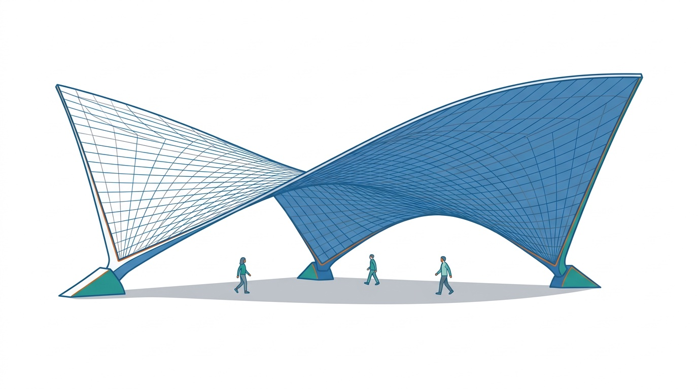

Por qué una lámina delgada puede ser tan fuerte, y qué matemáticas hacen falta para calcularla

Figura 1.1: Ilustración conceptual de una cubierta de hormigón con forma de paraboloide hiperbólico («silla de montar») sobre tres apoyos. Es una ilustración generada con FigureLabs a partir de un texto (prompt guardado en el repositorio), no es geometría exacta: no debe usarse para deducir medidas ni curvaturas.
Cómo puede una cáscara de hormigón de pocos centímetros de espesor cubrir un restaurante entero sin una sola columna en medio, y qué matemáticas necesitamos para calcular una forma así
Objetivos y prerrequisitos
Objetivos. Al terminar el tema sabrás:
describir qué es una lámina (o cáscara) y por qué la curvatura le da rigidez;
reconocer el paraboloide hiperbólico y por qué se puede construir con elementos rectos;
explicar por qué una lámina obliga a usar coordenadas curvilíneas y herramientas tensoriales;
orientarte en el mapa del libro: qué pregunta responde cada bloque;
calcular en Julia la base natural y la métrica de las coordenadas polares, el primer ejemplo del libro.
Prerrequisitos. Ninguno específico: bastan álgebra lineal y cálculo de primer ciclo universitario (vectores, matrices, derivadas parciales).
Secciones del tema
Sección 1.1 · Una cubierta que parece imposible
Sección 1.2 · Por qué la curvatura da rigidez
Sección 1.3 · Qué necesitamos saber: el mapa del libro
Sección 1.4 · Un primer ejemplo: coordenadas polares
1.1 Una cubierta que parece imposible
En 1958 se terminó en Xochimilco, al sur de la Ciudad de México, el restaurante Los Manantiales: una cubierta formada por cuatro paraboloides hiperbólicos que se cruzan en el centro y cubren un comedor de unos 32 metros de ancho sin apoyos intermedios. Las cubiertas de este tipo, con láminas de hormigón armado de apenas unos pocos centímetros de espesor, se asocian sobre todo al ingeniero y constructor Félix Candela.
Ejemplo 1.1 (Ejemplo resuelto: ¿cuán delgada es una cáscara?) La medida natural de lo delgada que es una lámina es la esbeltez\(L/h\) (luz dividida por espesor). Con los datos citados abajo, \(L\approx106\) pies \(\approx32{,}3\) m y \(h\approx4\) cm: \[
\frac{L}{h}\approx\frac{32{,}3}{0{,}04}\approx 800 .
\] Es la esbeltez de una hoja de papel de 20 cm de lado y \(0{,}25\) mm de espesor (algo más gruesa que un folio). Eso es posible porque la forma, y no solo el material, es la que soporta la carga.
AdvertenciaDos puntos que suelen confundir
Delgada no es débil. Una lámina de 4 cm puede soportar la cubierta de un edificio porque es curva. La misma chapa plana se doblaría bajo su peso.
El espesor de 4 cm es un orden de magnitud, no un dato exacto: las fuentes citadas dan 40 mm para este edificio y unas 1,5 pulgadas (≈ 38 mm) como espesor habitual de las cáscaras de Candela.
NotaUn poco de historia: las cáscaras de Candela
Félix Candela (m. 1997), ingeniero y constructor, es el nombre más asociado a las cubiertas de hormigón armado muy delgadas basadas en paraboloides hiperbólicos. Las fuentes consultadas coinciden en que Los Manantiales se construyó entre 1957 y 1958 y que su cubierta es una flor de cuatro «hypars» con forma de bóveda de arista de ocho lados; lo llaman «La Flor» en la zona. Un informe de ingeniería da un espesor de unos 40 mm; las reseñas generales de su obra hablan de 1,5 pulgadas (unos 38 mm) como espesor típico. Las cáscaras de Candela resistieron bien los grandes terremotos de la Ciudad de México de 1958 y 1985, según Structure Magazine. Una de las fuentes atribuye el proyecto de Los Manantiales a los arquitectos Joaquín y Fernando Álvarez Ordóñez, con Candela como ingeniero y constructor; otras lo presentan como obra de Candela.
La última gran obra asociada a su nombre es la cubierta del restaurante del Oceanogràfic de la Ciudad de las Artes y las Ciencias de Valencia, de la que se dice que se diseñó cerca de su muerte, en 1997: las fuentes discrepan en el número de paraboloides y en el papel exacto de Candela.
Pon a prueba lo anterior. Los ejercicios se corrigen en tu navegador y no envían nada a ningún sitio.
Una cáscara de 32 m de luz y 4 cm de espesor, ¿qué esbeltez \(L/h\) tiene?
\(L/h=32/0{,}04=800\).
Una chapa plana y otra curva del mismo material y espesor soportan igual una carga repartida sobre ellas.
Falso. La curvatura permite que la carga se transmita sobre todo por esfuerzos en el plano de la lámina (de membrana), mucho más eficientes que la flexión, que es el único recurso de una chapa plana (Sección 1.2).
1.2 Por qué la curvatura da rigidez
Coge una hoja de papel por un borde: se cae. Dóblala en forma de teja (curvatura en un sentido) y se sostiene mucho mejor. La razón es que una lámina puede soportar una carga de dos maneras:
por flexión, como una viga: la carga transversal se resiste con esfuerzos que varían a través del espesor. Es poco eficiente cuando el espesor es pequeño, porque la rigidez a flexión crece con el cubo del espesor;
por membrana: la carga se reparte por esfuerzos dentro del plano de la lámina, uniformes en el espesor, como en un globo. Es eficiente, y depende de que la lámina esté curvada.
Una cáscara bien diseñada trabaja casi toda como una membrana. Cuando se aproxima a un borde, a un apoyo o a un cambio brusco de forma, aparece además la flexión en una zona estrecha («efecto de borde»). Calcular ese reparto exige conocer con precisión cómo se curva la lámina y cómo se deforma: es el objetivo de todo el libro.
TipIdea clave
La forma de una lámina es parte de su resistencia. Por eso este libro empieza por la geometría de las superficies antes de hablar de tensiones.
1.2.1 El paraboloide hiperbólico
El paraboloide hiperbólico («hypar») es la superficie \(z=c\,x\,y\) (o, girada \(45^\circ\), \(z=\tfrac12(x^2/a^2-y^2/b^2)\)). Tiene dos propiedades que lo hacen ideal:
Es reglada: por cada punto pasan dos rectas contenidas en la superficie. Se puede encofrar con tablones rectos, lo que simplifica mucho la construcción (Sección 12.2).
Tiene curvatura de Gauss negativa en todos sus puntos (forma de silla): se curva hacia arriba en una dirección y hacia abajo en otra, lo que le da rigidez en dos sentidos a la vez.
Figura 1.2: Paraboloide hiperbólico ilustrativo \(z=c\,x\,y\) con sus dos familias de generatrices rectas (azul y verde): cada punto es la intersección de una recta de cada familia.
La Figura 1.2 muestra, además, el problema que nos espera: sobre una superficie curva no existen ejes cartesianos globales, y la base de vectores tangentes y la normal cambian de un punto a otro (azul y verde: tangentes; naranja: normal).
1.3 Qué necesitamos saber: el mapa del libro
Calcular una lámina como la de Candela con un ordenador exige responder, en este orden, cinco preguntas. Cada una es un bloque del libro (el recorrido completo, con el estado de cada tema, está en el Mapa del libro):
Bloque
Pregunta
Herramienta
A · Preludio
¿Por qué una cáscara fina resiste, y qué hace falta saber?
Este tema
B · Cálculo tensorial
¿Cómo se escriben las leyes de la física sin depender de las coordenadas?
Bases covariante y contravariante, métrica, Christoffel
C · Geometría de superficies
¿Qué es una superficie curva y cómo medimos su forma?
Formas fundamentales, curvaturas, paraboloide hiperbólico
D · Elasticidad
¿Cómo se deforma una lámina y cuánta energía almacena?
Cinemática de la lámina, Kirchhoff–Love y Reissner–Mindlin
E · Elementos finitos
¿Cómo lo calcula un ordenador sin que el elemento se bloquee?
Elemento de cuatro nodos, Hu–Washizu por subdominios
F · Vibraciones
¿A qué frecuencias vibra un hypar y cuánto podemos fiarnos?
Modos propios, comparación y convergencia
NotaCómo usar este libro
Cada tema tiene el mismo esquema: una pregunta guía, teoría con ejemplos resueltos, demostraciones plegadas (ábrelas si quieres el detalle), preguntas intercaladas que se corrigen en tu navegador, ejemplos en Julia, ejercicios con solución y una lista «La doy por superada si…». Los bloques de color tienen significado fijo: definiciones (azul), resultados (verde azulado), ejemplos (ámbar), ideas clave (violeta), historia (ocre).
Pon a prueba lo anterior.
¿Qué propiedad del paraboloide hiperbólico permitió encofrarlo con tablones rectos?
Que su curvatura de Gauss es positiva
Que es una superficie reglada: contiene rectas
Que es una superficie de revolución
Que es un plano inclinado
Es reglada: por cada punto pasan dos rectas contenidas en la superficie (Sección 12.2). No es de revolución y su curvatura de Gauss es negativa.
1.4 Un primer ejemplo: coordenadas polares
Antes de la superficie curva, el ejemplo más sencillo donde las bases cambian de punto a punto: el plano en coordenadas polares. Con \(x=r\cos\theta\), \(y=r\sin\theta\), el vector de posición es \(\mathbf{r}(r,\theta)=(r\cos\theta,\,r\sin\theta)\) y las bases naturales son
Son ortogonales, pero \(\|\mathbf{g}_2\|=r\)no es 1, y ambas giran con \(\theta\). Sus productos escalares \(g_{ij}=\mathbf{g}_i\cdot\mathbf{g}_j\) forman el tensor métrico:
La longitud de un arco depende de la métrica: la misma variación \(d\theta\) recorre más distancia cuanto mayor es \(r\). Ese es el contenido geométrico de \(g_{22}=r^2\).
1.4.1 Vector y componentes
AdvertenciaVector y componentes no son lo mismo
Escribir \(\mathbf{V}=(2,-1)\) no define un vector: define sus componentes respecto a una base concreta. En este libro se distingue siempre entre el vector \(\mathbf{V}\) y sus componentes \(V^i\) o \(V_i\).
TipEjemplo computacional
calculado El módulo Geometria implementa ecuación 1.1 y la métrica; se comprueba ecuación 1.2 en un punto.
usingGeometriar, θ =2.0, π/6B =base_polar(r, θ) # columnas: g₁ y g₂metrica(B) # debe ser diag(1, r²) = diag(1, 4)
Precompiling packages...
302.0 ms ✓ Geometria
1 dependency successfully precompiled in 0 seconds
2×2 Matrix{Float64}:
1.0 0.0
0.0 4.0
# Reciprocidad gⁱ·gⱼ = δⁱⱼ y reconstrucción de un vectorV = [1.0, 0.5]Vup =comps_contravariantes(B, V)(reciprocidad(B), desde_contravariantes(B, Vup) ≈ V)
([1.0 0.0; 0.0 1.0], true)
Pon a prueba lo anterior.
En coordenadas polares, en el punto \(r=2\), ¿cuánto vale \(g_{22}\)?
\(g_{22}=\|\mathbf{g}_2\|^2=r^2=4\).
1.5 Ejercicios
Cilíndricas. Calcula \(g_{ij}\) para las coordenadas cilíndricas \((\rho,\varphi,z)\) y comprueba que \(ds^2=d\rho^2+\rho^2d\varphi^2+dz^2\).
NotaSolución
\(\mathbf{r}=(\rho\cos\varphi,\rho\sin\varphi,z)\) da \(\mathbf{g}_1=(\cos\varphi,\sin\varphi,0)\), \(\mathbf{g}_2=\rho(-\sin\varphi,\cos\varphi,0)\), \(\mathbf{g}_3=(0,0,1)\), ortogonales con \(g_{11}=1\), \(g_{22}=\rho^2\), \(g_{33}=1\).
Determinante. Con base_polar, verifica numéricamente que \(\det(g_{ij})=r^2\) para varios valores de \(r\) y \(\theta\).
NotaSolución
using Geometria, LinearAlgebra; [det(metrica(base_polar(r, θ))) ≈ r^2 for r in 0.5:0.5:3, θ in 0:0.4:2] devuelve todo true.
Vector y componentes. Explica con tus palabras por qué \(\mathbf{V}=(2,-1)\) no basta para definir un vector.
NotaSolución
Esos dos números son las componentes respecto de una base. Sin decir cuál, no se sabe qué vector es: en otra base, el mismo vector tendría otros números.
Grosor. Una cubierta curva y una losa plana del mismo material cubren la misma luz con la misma carga. ¿Cuál necesita más espesor? Razona con la idea de membrana frente a flexión.
NotaSolución
La losa plana: trabaja a flexión, cuya rigidez crece con \(h^3\), y debe compensar la falta de curvatura con espesor. La cáscara trabaja sobre todo por membrana y necesita mucho menos material.
La doy por superada si…
Explico por qué una lámina delgada puede ser fuerte y cuál es el papel de la curvatura.
Distingo la forma de trabajo por membrana de la de flexión.
Reconozco el paraboloide hiperbólico como superficie reglada de curvatura de Gauss negativa.
Sé qué pregunta responde cada bloque del libro.
Calculo la base natural y la métrica de las coordenadas polares y entiendo por qué \(\mathbf{g}_2\) no es unitario.
NotaFuentes, correcciones y qué queda pendiente
Fuentes. Texto autónomo. Las notas históricas se apoyan en fuentes secundarias enlazadas en la propia caja; los datos de espesor y autoría de Los Manantiales y del Oceanogràfic no se han contrastado con fuentes primarias. Para la teoría, resultados estándar de mecánica de láminas (Novozhilov 1959; Flügge 1972).
Qué queda pendiente.
La ilustración de portada (FigureLabs) y la figura de apertura (TikZ) tienen revisión visual humana pendiente.
La comparación con el papel es una analogía de escala (esbeltez 800), no un dato de ingeniería.
Referencias no leídas línea a línea para este tema.
Flügge, W. 1972. Tensor Analysis and Continuum Mechanics. Springer-Verlag.
Novozhilov, V. V. 1959. The Theory of Thin Shells. P. Noordhoff ltd.
Las referencias citadas aparecen en el margen, junto al texto (y en una tarjeta al pasar el ratón por la cita); al final del tema se repiten en una lista.
Referencias
Son las mismas que aparecen en el margen, junto al texto.
Flügge, W. 1972. Tensor Analysis and Continuum Mechanics. Springer-Verlag.
Novozhilov, V. V. 1959. The Theory of Thin Shells. P. Noordhoff ltd.